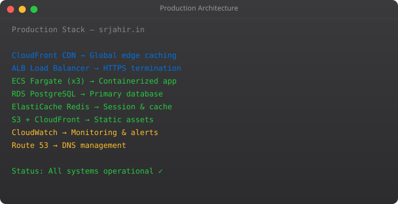

This final part ties together everything from the series. We will build a complete, professional DevOps setup for a Python Flask API: containerised with Docker, tested in CI, deployed to Kubernetes, infrastructure provisioned with Terraform, and monitored with Prometheus and Grafana. This is a real portfolio project you can show in interviews.
GitHub Repository
|
| (push to main)
v
GitHub Actions CI/CD
|-- Run pytest
|-- Build Docker image
|-- Push to Amazon ECR
|-- Update Kubernetes deployment
v
Kubernetes Cluster (EKS or local)
|-- myapp Deployment (3 replicas)
|-- myapp Service (ClusterIP)
|-- myapp Ingress (HTTPS via nginx-ingress)
|-- Prometheus scraping /metrics
|-- Grafana dashboards
v
Terraform-managed infrastructure
|-- VPC, subnets
|-- EKS cluster
|-- ECR registry
|-- RDS PostgreSQLfrom flask import Flask, jsonify
from prometheus_flask_exporter import PrometheusMetrics
app = Flask(__name__)
metrics = PrometheusMetrics(app)
@app.route("/health")
@metrics.do_not_track()
def health():
return jsonify({"status": "healthy", "version": "1.0.0"})
@app.route("/api/users")
def get_users():
return jsonify({"users": ["suraj", "raj", "priya"]})
if __name__ == "__main__":
app.run(host="0.0.0.0", port=8000)FROM python:3.11-slim AS builder
WORKDIR /build
COPY requirements.txt .
RUN pip wheel --no-cache-dir --wheel-dir /wheels -r requirements.txt
FROM python:3.11-slim
WORKDIR /app
COPY --from=builder /wheels /wheels
RUN pip install --no-cache --no-index --find-links=/wheels /wheels/*
RUN useradd -m -u 1000 appuser && chown -R appuser /app
USER appuser
COPY --chown=appuser:appuser . .
EXPOSE 8000
CMD ["gunicorn", "app:app", "--bind", "0.0.0.0:8000", "--workers", "4"]name: Deploy
on:
push:
branches: [main]
jobs:
test-build-deploy:
runs-on: ubuntu-latest
steps:
- uses: actions/checkout@v4
- name: Run tests
run: |
pip install -r requirements.txt
pytest tests/ -v
- name: Configure AWS
uses: aws-actions/configure-aws-credentials@v4
with:
aws-access-key-id: ${{ secrets.AWS_ACCESS_KEY_ID }}
aws-secret-access-key: ${{ secrets.AWS_SECRET_ACCESS_KEY }}
aws-region: us-east-1
- name: Build and push to ECR
env:
ECR_REGISTRY: ${{ steps.login-ecr.outputs.registry }}
run: |
docker build -t $ECR_REGISTRY/myapp:${{ github.sha }} .
docker push $ECR_REGISTRY/myapp:${{ github.sha }}
- name: Deploy to Kubernetes
run: |
aws eks update-kubeconfig --name production-cluster
kubectl set image deployment/myapp myapp=$ECR_REGISTRY/myapp:${{ github.sha }}
kubectl rollout status deployment/myappmodule "eks" {
source = "terraform-aws-modules/eks/aws"
version = "~> 19.0"
cluster_name = "production-cluster"
cluster_version = "1.28"
vpc_id = module.vpc.vpc_id
subnet_ids = module.vpc.private_subnets
eks_managed_node_groups = {
general = {
instance_types = ["t3.medium"]
min_size = 2
max_size = 10
desired_size = 3
}
}
}No. Start simple. A small project can run on a single EC2 instance with Docker Compose, a basic GitHub Actions pipeline, and CloudWatch for monitoring. Add complexity only when you genuinely need it. This series shows the full production stack -- adopt pieces as your needs grow.
With the knowledge from this series, setting up the full CI/CD + Kubernetes + Terraform stack takes 1-2 weeks for an experienced DevOps engineer. For a learner, 2-4 weeks to understand all the pieces and make it work correctly.
Follow the series in order. Set up each component locally before moving to the cloud. Use kind for local Kubernetes. Use LocalStack for local AWS. Build each piece incrementally. Do not try to set up the entire stack on day one.
GitHub repos with working CI/CD pipelines. A containerised application with Kubernetes manifests. Terraform code that provisions real infrastructure. A blog post or README documenting what you built and why. This series gives you everything you need to build all of these.
Get hands-on with the AWS Solutions Architect Associate certification. Build a real project from scratch using these skills. Contribute to open-source DevOps tools. Practice on platforms like KodeKloud, A Cloud Guru, or the Linux Foundation training.
You have completed the full DevOps Roadmap series. From understanding what DevOps means to building a complete production deployment pipeline. Check out the Kubernetes series and the Docker series to go deeper on those specific tools.
from flask import Flask
from prometheus_flask_exporter import PrometheusMetrics
import logging
import structlog
app = Flask(__name__)
metrics = PrometheusMetrics(app)
# Structured logging for log aggregation
structlog.configure(
processors=[
structlog.processors.TimeStamper(fmt="iso"),
structlog.processors.JSONRenderer()
]
)
logger = structlog.get_logger()
@app.route("/api/orders", methods=["POST"])
@metrics.counter("orders_created_total", "Orders created")
def create_order():
logger.info("order_received", user_id=request.json.get("user_id"))
# ... business logic
return jsonify({"status": "created"}), 201
# Custom gauge metric
active_connections = metrics.gauge(
"active_database_connections", "Active DB connections"
)
@app.before_request
def before():
active_connections.inc()
@app.teardown_request
def after(e=None):
active_connections.dec()# Code quality
[ ] All tests pass (pytest --cov=src tests/)
[ ] Security scan clean (bandit, trivy)
[ ] Dependency vulnerabilities checked (pip-audit)
[ ] Secrets not in code or images (gitleaks scan)
# Infrastructure
[ ] Resources deployed via Terraform (not manually)
[ ] Multi-AZ database (RDS Multi-AZ enabled)
[ ] Auto Scaling configured (min 2 instances across 2 AZs)
[ ] Backup configured (RDS automated backups, S3 versioning)
# Monitoring
[ ] Health check endpoint returns 200 consistently
[ ] Application logs shipping to CloudWatch
[ ] CPU/Memory alarms configured
[ ] Error rate alarm configured
[ ] On-call escalation path defined
# Security
[ ] IAM roles used (no access keys in EC2)
[ ] Security groups follow least privilege
[ ] SSL certificate installed and auto-renewing
[ ] WAF configured for public endpoints